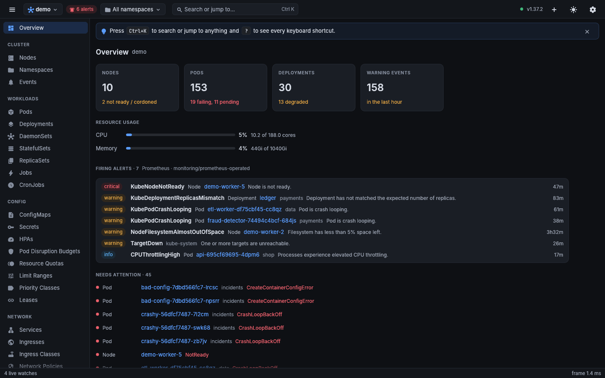
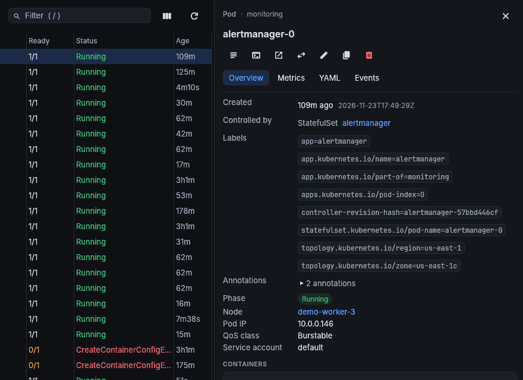
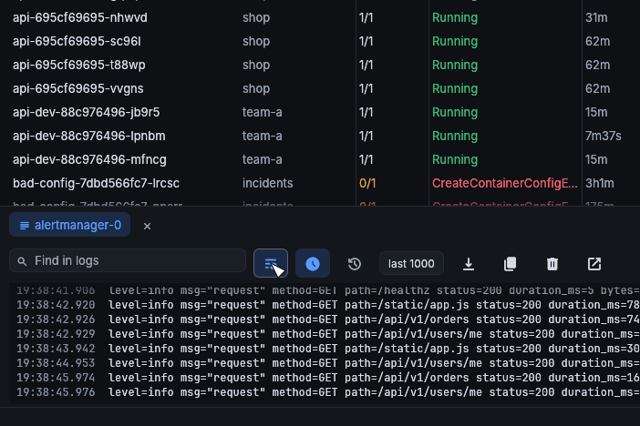
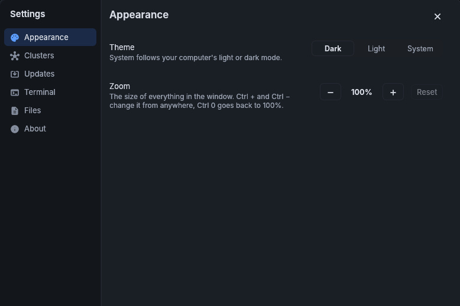

Open source · macOS, Windows, Linux
Your Kubernetes clusters,
in a fast native window.
Skiff is a desktop app for looking after clusters: every resource, live,
with logs, shells, metrics and alerts. One program. No web view, no
account, no telemetry. It reads your kubeconfig and talks to the API
server the way kubectl does.
Free, MIT licence. Source on GitHub.

Native, not a browser in a box
A single Rust program that draws its own interface. One process, no background services, nothing listening on a port.
Your kubeconfig, as it is
EKS, GKE, AKS and OIDC work through the credential plugins your
kubeconfig already names. If kubectl connects, Skiff does.
Only what you look at
A resource type is listed and watched when you open it, and dropped a few minutes after you leave. Large clusters stay quick.
What is in it
Every resource, live
Every type the cluster serves, custom resources included, with instant filtering, sortable columns and a details panel that links objects to each other: a pod to its node, its owner, its events.
- Several clusters; namespace filters remembered per cluster
- YAML view, edit and apply; conflicts are shown, not overridden
- Scale, restart, cordon, suspend, delete


Metrics and alerts from the Prometheus you already run
CPU, memory, network and restart charts for pods, workloads and nodes, over an hour or a week. Firing alerts appear on the overview and on the object each one is about.
- Reached through the Kubernetes API server: no extra login, no port-forward
- Found automatically, or named in one setting
- A short history from metrics-server where there is no Prometheus
- One click to the same queries in your Grafana






Read-only clusters
Mark production read-only and Skiff refuses every change to it: no edit, delete, scale, shell or port-forward. Or have it ask before each change. A guard against a slip of the hand, one switch per cluster.
Measured, not claimed
We publish only numbers we measured, with the method next to them. Skiff 0.1.0 on Linux, showing all pods of a test cluster with 100 nodes and 5,415 pods, on a 4-vCPU virtual machine with no GPU, so every frame was drawn in software.
| What | Median | Range |
|---|---|---|
| First frame built after launch | 118 ms | 96 – 127 ms |
| Window visible | 160 ms | 149 – 256 ms |
| All 5,415 pods listed and live | 0.58 s | 0.51 – 0.97 s |
| Memory with that table open (PSS) | 162 MiB | 161 – 163 MiB |
| CPU while idle | 0.50% of one core | 0.47 – 0.55% |
| Processes / threads | 1 / 18 | |
| Listening sockets | none | |
| Executable | 39.2 MB | |
| Download (.deb / AppImage) | 11.3 MB / 15.4 MB |
- At least 92 of the 162 MiB are the software graphics stack that stands in for a GPU on that machine. Memory and speed on a real GPU, on macOS and on Windows have not been measured yet.
- The test cluster's pods are simulated and the API server is local, so there is no network delay in these figures.
- No other tool has been measured, so there is no comparison table. The same script measures any app; run it on your machine and see.
What it does with your access
A cluster tool holds the keys to your clusters. This is what Skiff does with them.
Credentials stay put
Skiff reads your kubeconfig and runs the credential plugins it names, as kubectl does. No account, and no credential store of its own.
Two destinations
The API server of the cluster you open, and GitHub's API for an anonymous update check that one setting turns off. Prometheus is reached through the API server.
No telemetry
No usage statistics, no crash reports, no identifier. There is nothing to opt out of.
Secrets on request only
Tables ask the server for rows, not objects. A Secret is fetched in full only when you open it, and a copied value is cleared from the clipboard after a minute.
Clusters are not trusted
Log lines and responses are bounded, escape sequences in logs are removed, and a program in a container cannot write to your clipboard through the terminal.
Careful updates
On Windows and Linux Skiff only tells you about a new version. On macOS it installs one only after the download's code signature verifies.
Skiff is new and has had no independent security review. The full account, with its limits
Download
The current stable release. Free, no sign-up.
macOS
macOS 11 or newer · Apple Silicon and Intel
Disk image (.dmg)Open it and drag Skiff to Applications.
Windows
Windows 10 or 11 · 64-bit
Installer (.exe)Installs for your user; no administrator rights. Or the portable zip.
First launch. The builds are not yet signed by Apple or Microsoft, so both systems ask before running Skiff the first time. The steps are in the FAQ. Each release's notes say whether that build is signed.
Check a download against SHA256SUMS, see how to verify it, browse all releases, or build from source.
Questions
macOS says Skiff cannot be opened. What now?
The Mac build is not yet signed with an Apple Developer ID, so macOS stops the first start. Allow it once: open System Settings → Privacy & Security, scroll down to the message about Skiff and choose Open Anyway. From a terminal, the same is:
xattr -dr com.apple.quarantine /Applications/Skiff.appAfter that it opens normally. The notes of each release say whether that build is signed and notarized; a notarized build needs none of this.
Windows shows “Windows protected your PC”.
The Windows build is not yet signed, so SmartScreen warns about a program it has not seen before. Choose More info, then Run anyway. You can check the file first against the release's SHA256SUMS.
Which clusters does it show? Where does it find my kubeconfig?
The same ones as kubectl: the files listed in
$KUBECONFIG, or ~/.kube/config. You can add
more files, folders of files or wildcards in Settings, or drop a
kubeconfig onto the window. When a file changes, for example after
aws eks update-kubeconfig, Skiff picks it up when you
switch back to it. A broken file is named and the others still
work.
Does it work with EKS, GKE, AKS and single sign-on?
Yes, through the credential plugins your kubeconfig names
(aws, gke-gcloud-auth-plugin,
kubelogin and others) and OIDC. Skiff has no sign-in of its
own. If a plugin is missing or a login has expired, Skiff says which
and what to run.
Clusters and signing in
How does it find Prometheus, and what does it need?
It looks for the Prometheus Service in your cluster by the labels
and names the common installations use (kube-prometheus-stack, the
Prometheus chart, VictoriaMetrics) and asks it through the Kubernetes
API server. Your account needs get on
services/proxy for that Service. If yours has an unusual
name, one setting names it. Without Prometheus you still get CPU and
memory from metrics-server.
Metrics and alerts
How do updates work?
Skiff asks GitHub at startup, and every four hours while open, whether a newer release exists. On macOS it can install the update after checking its signature; on Windows and Linux it opens the release page. You can turn the check off, or choose nightly builds, in Settings.
What is deliberately not in it?
No plugin system, no embedded Grafana or other web view, no
sign-in or VPN client of its own, no incident management, no hosted
or team mode, and no bundled kubectl or
helm. Skiff is meant to stay one small program you can
trust with cluster credentials. Helm releases and node drain are on
the roadmap.